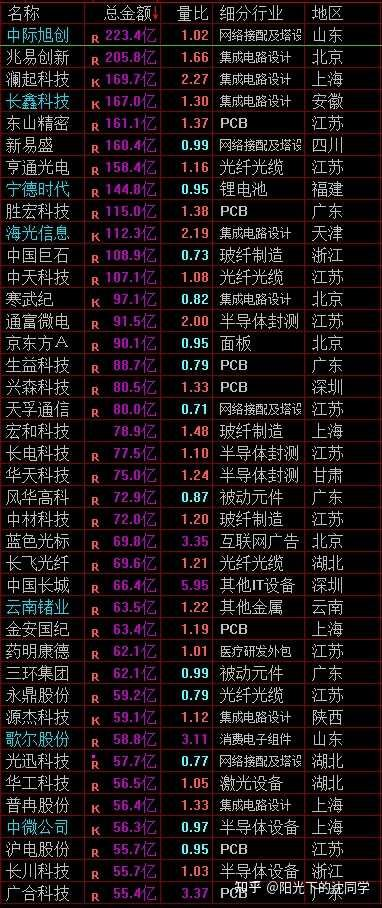
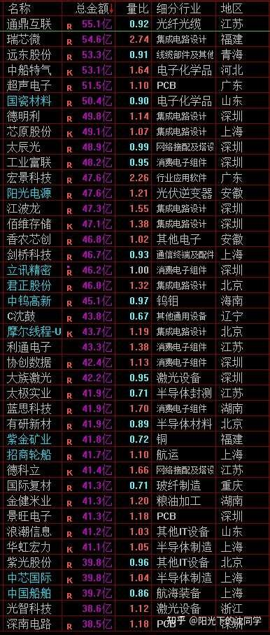
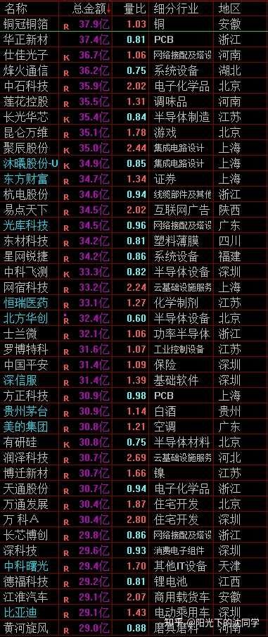

本文的核心逻辑在于顺应“资金面偏紧、无系统性主线”的现实，倡导“以仓位管理对抗不确定性”。作者指出当前市场缺乏全面做多动能，应主动清理短线、保存本金。在具体的方向选择上，作者跳出了单纯的指数涨跌，深入剖析了产业因果链：AI从大模型走向智能体（Agentic AI）导致工作负载发生结构性转移，CPU与GPU配比从1:4向1:1收敛，进而引爆CPU及液冷产业链需求；而房地产则由“供给收缩+政策刺激”驱动局部游资博弈。宏观上建议放弃追高杀跌的高频博弈，转向全球大类资产配置（红利、债券、黄金、港股科技洼地），利用低位布局与复利耐心跨越震荡周期。
马上过节，持股过节？还是持币过节？注【本质逻辑】假期时间窗口面临长达数天的休市，期间海外宏观变量（如美联储议息、地缘政治风险）存在不确定性，资金为避免不可控跳空风险常选择在节前抛售变现或减仓。【新手提示】节前通常伴随成交量萎缩（缩量），若无明确政策利好预期，盲目重仓过节易承受被动挨打的心理压力，轻仓或持币能为节后抄底留出主动权。大家可以聊聊自己的看法
我认为行情没有什么主线，比较无聊，资金面不算很好，所以会主动优化好仓位，不做盲目博弈，提前把短线账户清理干净，等过节期间再研究研究，看看有没有好的方向可以节后参与
投资需要有节奏，不能总是高仓位，要收放自如
这样才能在出现机会，市场有廉价筹码的时候可以参与
并且仓位控制好的话，适当参与也不会马上满仓
尤其是资金面不是很好的时候，学会休息，学会保护自己本金安全，是大家一定要有的耐心，也是投资者的必修课
不懂得休息的投资者，反而比较难赚钱
分享一些最新的行业调研资料，聊聊投资心得，喜欢的朋友可以收藏起来，慢慢学习
祝2026年9月23日看见的朋友，多多赚钱，投资顺利！
现在很多投资机会都是细分领域机会，之前文章也都有聊很多，今天继续补充
比如说最近国外AI智能体发展火爆，带动CPU需求重估，实际上CPU需求会大幅提升这个是早就聊过的，但后面的火爆情况可能会持续超预期，CPU产业链值得研究
比如说每个Muse用户分配了一台运行在Meta云端的专属虚拟机，标配2个vCPU、8GB内存、100GB SSD
用户每开一个Muse，Meta就得多备一台虚拟机
如果未来用户规模扩到1亿，光CPU就需要约158万颗
各种任务环节很多选择主要吃CPU算力，不是GPU，比如说写邮件、订机票、比价下单，每一步都涉及意图拆解、任务编排、工具调用和结果验证
传统大模型工作负载里CPU占比只有14%，到了智能体时代会跳到50%，跟GPU平分秋色
传统AI数据中心每GW需要约3000万个CPU核心，Agentic AI时代要1.2亿个，直接翻四倍
AI基础设施里CPU和GPU的配比正从1:4到1:8，向1:1收敛
英伟达现在也在快速发展CPU
英特尔服务器CPU目前只能满足约50%的客户订单
计划10月再度上调CPU价格约10%
英特尔与AMD的2026年服务器CPU产能已基本售罄
所以未来CPU产业链是值得反复博弈的，大家可以多关注
当然随着AI从聊天机器人向智能体应用加速演进，推理、编排及基础设施层的算力需求将持续扩张，PCB及ABF基板供应商有望迎来重估机会
这两个方面最新调研情况来看，订单也是非常饱满的
然后液冷方面也是我个人很关注，很喜欢博弈的方向
最新情况来看LG电子AI液冷设备获英伟达认证
随着AI服务器功耗提升、液冷需求快速增长，以CDU为核心拓展冷水机组、冷板等产品，有望进一步争取AI数据中心液冷订单
2.5兆瓦CDU的容量与英伟达AI工厂的机架级功耗需求较为匹配
AI工厂中单个服务器机架的功耗约为120千瓦，20个机架合计功耗约2.4兆瓦，接近单台2.5兆瓦CDU的覆盖能力
龙头液冷企业可以覆盖不同规模的数据中心冷却需求，逐步形成从中小功率到大型AI数据中心的产品矩阵
液冷方面值得长期持续关注
---
每天原创不易，而且现在限制非常多，坚持更新越来越难，读者朋友千万不要忘记点赞支持一下
正所谓先赞后看，腰缠万贯
大家可以先点一波赞，我们再继续慢慢聊
祝点赞的朋友福寿无量，天天开心
继续深度聊聊房地产，房地产不仅仅是聊短行情，还有很多东西可以聊，其实是非常重要的一个方向，关系到大家配置房产，生活居住，传统行业，经济周期运行
短期股市房地产方面的火爆从资金面来看很多游资博弈，其实每年房地产都有一些利好，也都有超跌反弹
叠加最新的各种利好，预判2027-2030年新房新开工持续下滑将形成阶段性供应缺口，供给收缩是目前炒作的核心
包括贴息购房+存量房贷进一步降息等等这些利好刺激，游资会选择做一波房地产板块很正常
目前也没有很多细分领域可以做
不是AI产业链，就是农林牧渔，传媒，然后就是地产，博弈的方向并不多
真的要聊长期房地产行业周期，下一轮繁荣，或者是房价拐点
可以关注下面几个核心，我自己是很喜欢配置房子，所以在这方面研究比较多
我个人很关注居民部门杠杆率变化
然后个人住房贷款余额
每年的新房销售面积变化，未来能不能在6-8亿平企稳
利率变化
不同城市的经济结构，人口结构，地段情况，小区物业情况都很重要
要决定买不买房子，什么时候买，怎么买，怎么选房子，怎么给房子估价其实是非常系统，非常专业的事情，没有以上这些考量很容易就亏大钱
这方面一聊就太多了，如果大家感兴趣，以后可以专门单开一篇聊这些房地产方面的事情
对于想配置房产，想选房子的朋友，还是帮助比较大的，很多都是我自己买房，选房踩过的坑
这些以后再聊

核心宽基最新估值水位参考表直观展示了各大主流指数的安全边际。从多空心理博弈来看，表格将“泡沫、高估、合理、低估”进行数字化定量，帮助新手在市场狂热（泡沫区）或恐慌（低估区）时锚定客观坐标，避免被情绪左右而盲目追涨杀跌。
大家有任何投资疑问，有什么想交流的都可以在知乎首页付费咨询，想单纯支持一下也可以
【在知乎上我的主页咨询即可，没有任何群，不搞私下小圈子】
家庭资产长期稳健配置方案分享，仓位优化，估值分析，行业分析，心态调整，各种投资学习技巧都可以咨询
大家的支持和尊重是我创作的最大动力
感恩大家每天的咨询，感谢大家对知识的尊重，感谢大家对我的支持
欢迎咨询
行情闲聊
资金面没有太多新的变化
目前可以的方向要不就是低位的，要不就是短期有资金参与博弈的，其他很难做
而且随着指数反弹一波，胜率也会下降，我个人实战方面肯定是在调整的时候，有廉价筹码的时候去参与博弈
不是短期资金面活跃的方向，胜率也不高，也没有什么交易空间
长期值得关注的优质资产，黄金短期估值中规中矩，最好是再多调整调整更好
美股高位震荡注【本质逻辑】多空双方在某一相对高点展开激烈拉锯，买方无力继续推高价格，卖方逢高出货意愿强烈，导致指数或资产价格上下两难。【新手提示】高位震荡往往是主力资金明修栈道暗度陈仓的派发阶段，新手切忌因“看着还在涨”而盲目追高，极易接盘最后一棒。，暂时关注机会不大
债券很平稳，很值得关注
红利分化大，可以多关注低估值的，低位优质红利机会
新手投资者，上班族，可以把各种优质ETF，玩明白，其实挺好，比个股安全，短线博弈这些是不推荐大仓位去玩的，那是要你很懂AI产业链，很懂游资的炒作思路和逻辑，那才能驾驭资金面活跃的细分品种
并且止损也要非常快，不然很难玩，肯定不如多研究研究，美股，红利，债券，黄金资产，他们长期回撤小，长期复利平稳，比大部分个股好
港股最近资金面有回升
按照最新的资金面情况来看南向资金连续第12个交易日净流入港股市场，这说明有资金在把握港股扑街后面的核心资产配置机会
我认为港股的机会12月之前是很多新纳入的科技企业估值回升机会，12月以后是核心港股科技估值回升机会
要注意这两个方向
其实港股的AI龙头企业是非常低估的，他们很多AI方面的发展已经有了成果，但股价没有体现，这些都是未来会有估值重估的
港股的AI龙头，创新药，红利，高端制造，金融，新消费都是我个人非常重视的方向，值得研究
港股现在算是比较估值洼地的，12月之前的走势可能还会不怎么平稳，但是每次调整都有关注机会
长期看好港股市场发展潜力
投资就是多关注核心品种，在他们低估值的时候配置，长期收益才好
不管是美股，港股还是A股，多关注核心龙头企业，在他们低迷的时候关注，都是很好的思路
美股，黄金，红利，债券+各大核心市场的龙头企业+行业宽基ETF配置，这样的投资组合，是很科学健康的
比单纯的大仓位围绕个人去追涨杀跌好的多
其实大家去和身边很多老股民聊聊，都会发现，能赚钱的，都是配置的品种长期比较好的，不一定大家很懂波段，做t，或者短线交易技巧，但大方向的配置是没有问题的，然后短期可能做的不太好，因为长期持仓比较好，所以收获比较大
那些亏的多的其实都是喜欢玩短线的，追涨杀跌，行情好赚一点，大部分时间都做不好，止损也不果断，导致本金越来越少，一直做不好投资
短线本来就很难预测，也很难做，短线小仓位玩一玩真的足够，真的要通过投资赚钱，都是通过合理的资产配置
分散配置各种优质资产，通过仓位控制去慢慢陪伴优质资产成长，这样来实现的
这样是最适合大部分投资者的投资模式，盈利模式
那种天天想赚钱，交易非常频繁，天天追热点，大仓位博弈个股的赚钱方法，跑不通，最起码不适合99%的投资者，风险非常大
大家把这些想清楚了，好好控制好仓位，在行情不太好的时候多配置债券，留着现金，控制好仓位，以后有很多廉价筹码收集机会，买到了拿得住，慢慢复利，自然就做到了投资领域少数的赚钱群体
和大部分人不一样的交易思路，其实就是慢下来，关注长期复利，关注本金安全，而不是大仓位动来动去
把仓位优化好，以后会有很多更好的买点

A股热门科技与核心资产的成交额与量比排行榜。图中多数字细分龙头（如中际旭创、寒武纪等）总金额居前，体现了机构资金在算力、半导体赛道上的抱团博弈行为，高成交额背后是主力资金对产业逻辑的强共识。

涵盖新能源、消费电子与周期股的资金流向监控。部分标的量比异常放大（如瑞芯微等），暗示短期有活跃游资进场进行短线试盘或题材炒作，多空分歧开始加大，新手在此类区域参与极易遭遇剧烈震荡。

涵盖游戏、证券、白酒及房地产等传统与泛科技板块的资金交投面板。万科A等地产股量比显著走高，直接印证了文章所述游资对地产板块超跌反弹与政策刺激的博弈冲动，显示出存量博弈下资金在周期与科技之间的高频切换。
风险提示：股市有风险，入市须谨慎
今天是坚持写复盘笔记的第1528天【每日打卡】
下面是我自己多年来的一些重要的心得感悟，分享给大家，会不定期增加内容
1，
长期投资成功的关键是稳定的情绪和沉稳的性格，这些比过人的天赋更重要
2，
最终我们穷其一生获得的一切经验、知识和所有财富都需要转化为自身的品德修养，不然获得越多失去越多
自身的修养是留住各种财富最好的容器，富裕一时不难，富裕一生不易
珍惜获得的一切，保持初心、慈善、知足，让自己的德行和财富共同成长，才能方得始终
3，
古之成大事者，不惟有超世之才，亦必有坚忍不拔之志
想成为优秀的投资者一定要持之以恒，不断学习，反思，总结，在投资中获得的各种经验最终都会成为你财务自由的砖瓦
4，
再高的智商也一样会被情绪一瞬间冲垮
大部分的亏损都来源于投资者的冲动和情绪化交易，学会控制自己的情绪和心态才能长期稳定的复利
5，
富在术数，不在劳身
一定要多思考，任何时候想清楚了再交易，漫无目的的交易，只会多做多错
6，
利在势居，不在力耕
投资赚钱主要靠把握时机，没有机会就休息，多留现金
做可以让自己心安的投资，便是对于你来说最好的盈利模式
7，
谨记：贪念起，万念俱灰！
控制住了风险，利润会随之而来
富贵险中求，也在险中丢
求时十之一，丢时十之九
祝大家在如梦如幻的行情里清醒而自由
每天和读者朋友声明一遍：
每日复盘内容不涉及具体仓位，持仓，代码，买卖，点位，趋势判断这些内容
只能以科普，经验分享为主，限制越来越多，希望大家见谅
可以聊的内容，会尽可能的聊，前提是合规，符合要求的分享
有任何疑问，不清楚的，都可以在知乎首页上咨询，什么都可以问，知无不言
当前投资难度：极高
交易胜率不高，整体机会不如细分领域机会
投资者应该谨慎，控制好仓位，多留现金，不要冲动交易
多关注资金面好的核心细分领域机会，低估值，低位科技，低位白马蓝筹，不要追涨杀跌，不要乱追高
全文总结：在A股整体资金面偏紧、胜率不高的当下，盲目追逐短线热点和高频交易犹如火中取栗。作者通过扎实的产业链拆解（如AI算力结构性演变带动CPU与液冷需求）指出了局部结构性机会，但在宏观策略上坚定奉行“资产配置+仓位管理”的长效复利法则。新手防踩雷法则：1. 严禁满仓梭哈与频繁追涨杀跌，学会用现金和债券买取安全感与耐心；2. 布局科技赛道必须看懂底层产业因果，切忌盲目跟风炒概念；3. 拥抱全球分散配置（美股、港股洼地、黄金、红利），用时间和纪律战胜人性弱点。


{kind=link}
{kind=link}
{kind=link}
{kind=link}
{kind=link}
支持老沈的干货分享，感觉老沈分享的比之前还丰富，非常感谢
我自己肯定是维持50%仓位过节，之前仓位没有控制好，没办法杀跌买入，现在仓位终于控制下来了，以后下跌就有加仓空间了
截止目前差不多10月份，今年收益36.5%，已经证转银20万，仓位50%，都是红利+医药，剩下的债券，感觉在天天听老沈念经之后，我的仓位健康了很多
后面下跌会关注液冷，CPU，房地产，农林牧渔，港股AI龙头这些机会，听懂了老沈的文章意思，就是现在多留现金，以后跌了买，买低位的，买热门的，上涨就获利了结卖出，非常清晰
强烈期待房地产相关的好文，最近觉得房价已经是底部区间了，准备明年就开始看了
每日中译中笔记：
1、 美股高位震荡，没有买点
2、 黄金现在价格略高了，可以等调整后再加仓
3、 债券可以继续现金配置，不错！
4、 红利可以看较低价格的，值得配置。
节前就好好苟着，多多学习。
目前有房也有房贷，买房是生平第一大错误。就我个人而言，以后大概率不会再买。从刚需的角度，其实刚需是伪命题，一定要房子才结婚的不是良偶。孩子读书需要学区房也是伪命题，事实上买了学区房，孩子读书也未必更好，读书好也不一定有好工作。把买房的钱留下来，教孩子一些理财，以后作为投资或者创业的起步资金，可能是更好选择。居住功能的话，买房的钱拿去租房，可以享受品质更好的房子，没有折旧问题，剩下来的钱可以吃喝旅游，生活品质更高。
从投资的角度，短期没有投资价值，只有5-10年后可能有机会，还要看城市和地段，占用本金多，流动性差，折旧还厉害。一言以蔽之，如果房子有大行情，房地产股票行情会更加波澜壮阔，从投资角度，买房子不如炒房地产股票。
从消费的角度，我何德何能，吃了一次大亏还不够，还要吃第二次大亏，花几百万买钢筋混凝土，拿去别的地方花真是太香了。假设以后有钱，首先是辞掉工作，赎回自由，然后证转银，有条件吃吃喝喝旅旅游，做点公益也好啊。如果以后真的奢侈到拿宝贵的现金流二次买房，估计至少几千万上亿资金才会去这么做，对于我来说，只能说梦里啥都有了。
大涨之后必有大跌，最近美股大涨，我再减了一些，计划把长线中的美股比例降到30%；其他仅现金流指数小额定投，准备等大跌再加，长线节前大致如此。短线里医药最舒服，前几天做T锁定盈利并降本，目前6层，后面再涨准备再降1层不动，大跌再慢慢加，不急；消费9层多，成本较低，后面涨则逐步减仓，跌则小幅加仓，仍以做T降本为主，这个说急也不急。恒生科技前两天卖了一些，目前2层，今天下跌，看明天若大跌就接回1层。该指数成本高、仓位低，做得不好：短期错在盈利时没及时做T，长期错在建仓偏早、不符合买入逻辑。个股暂未加，均3层左右，想等市场大跌、指数大跌再加。
在下跌趋势中不断做T，锁定收益并降低成本。共勉
港股继续死拿，看这个情况再等半年咯